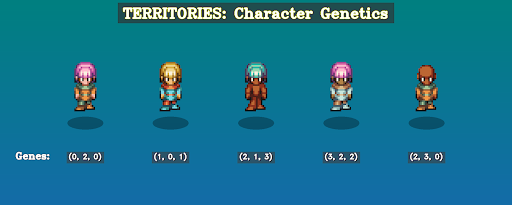
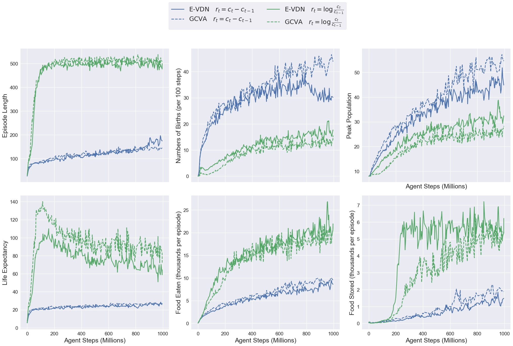

Emerging a Society with MARL Part 2
Evolution Acts Like an Investor
Published on 2025-10-24
In Part 1 of this series, I proposed four key properties that an environment must have for societies to emerge, and introduced Territories, a multi-agent world built around those principles. Now that the right environment is in place, the next step is to apply the right pressure on its agents to foster the emergence of social intelligence.
Nature drives evolutionary pressure for agents to develop ever greater capabilities to maximise the survival and reproduction of their genes. We want to maximise the same objective but with a more efficient optimiser: Reinforcement Learning instead of Evolution.
When we trained agents to maximise their number of gene copies, they overpopulated the world and drove themselves extinct. We later noticed that investors face the same underlying problem: naïve wealth maximisation leads to bankruptcy. Investors discovered a simple mathematical trick to avoid it — and our results show that the same principle also works for evolution.
Our earlier paper [1] introduced a reward function to mimic evolutionary pressure. At the end, we hinted at a better alternative for future work. In this Part, I finally test that idea and describe both the theory and results of why this novel reward function best captures evolutionary pressure. But before we can design rewards that maximize gene copies, we need to understand how genes are represented and inherited in Territories.
How DNA Works in Territories
In the default settings, each agent carries 3 genes, and each gene can have one of four values (called alleles, integers from 0 to 3). The policy of each agent is conditional on their DNA.
We create 32-dimensional embeddings for each of the 12 possible alleles (3 genes × 4 alleles per gene). Each agent's allele maps to its corresponding embeddings, then we average all the embeddings from the three genes to produce the policy input. This design allows different genes to cause different behaviors while ensuring that agents with overlapping genes share some behavioral features. Think of the number of dimensions in the allele embeddings as degrees of freedom to change the policy according to the DNA.

The agents can see their relative kinship with other visible agents and observe their DNA as one-hot encoded vectors. This allows agents to distinguish between potentially cooperative and non-cooperative policies, regardless of kinship. In our visualization, we represent the first gene with different skin colors, the second with different hair colors, and the third with different outfits.
When two agents reproduce, each gene of the child is randomly selected from one of the parents. These genetic parameters (number of genes, alleles per gene) are configurable and will be adjusted for different experiments.
The Evolutionary Reward Function
The challenge of maximizing gene copies shares a surprising parallel with wealth maximization in finance. In both cases, outcomes compound over time; more money generates additional money, just as more relatives carrying your genes generate more gene copies. Critically, both require avoiding catastrophic failure: bankruptcy for investors, extinction for species.
How to Maximise Wealth with the Kelly Criterion
Consider an investor facing a sequence of binary bets with probability p of doubling their stake and probability 1-p of losing it entirely. A naive objective would be to maximize the expected wealth after N bets. If p > 0.5, this objective is achieved by the investor betting its entire wealth at every bet:
However, this strategy leads almost certainly to ruin:
For any long horizon, this risk approaches 100%. The problem is that expected value doesn’t represent typical outcomes; it’s dominated by an extremely rare event where all bets succeed, while the median outcome is bankruptcy.
The solution, well-established in finance, is to maximize the expected logarithm of wealth instead. This formulation prioritises the avoidance of bankruptcy above everything else since log(0) = -∞. As Warren Buffett says, the first rule of investing is: don’t lose money, and the second rule is to never forget the first rule. Only once you have strategies that can safely avoid bankruptcy, you can start maximising growth.
Maximising the logarithm of wealth gives rise to the Kelly Criterion — a provably optimal strategy for long-term wealth growth in the super simple scenario of sequential binary bets with known odds. In practice, we approximate the infinite penalty with a very large negative value to avoid breaking the learning algorithm.
From Wealth to Gene Copies
Evolution operates on the same principle. Our agents seek to maximize copies of their genes across the population. We define gene copy count at time for agent as:
where represents the kinship (number of shared genes) between agents and , summed over all living agents at time .
The most straightforward evolutionary reward would assign 0 everywhere except (or ) at episode termination. But this creates two critical problems:
- Sparse rewards provide minimal learning signal during training
- Finite episodes conflict with our goal of infinite-horizon learning
From Terminal to Dense Rewards
We can transform these terminal rewards into dense, infinite-horizon compatible rewards by rewriting them as sums of step-by-step changes:
Linear reward (maximizing estimated gene copies):
Logarithmic reward (Kelly-inspired):
Both formulations provide dense learning signals and work even when goes to infinity.
The logarithm creates loss aversion — it penalizes losses more than it rewards equivalent gains. With 4 gene copies in the gene pool:
- Losing 1 copy (4 → 3):
- Gaining 1 copy (4 → 5):
A 50-50 gamble between these outcomes yields negative expected reward (-0.032), even though the expected gene change is neutral. This asymmetry scales: a 25% loss always hurts more than a 25% gain helps.
The Kelly-inspired reward is theoretically optimal for sequential binary bets with known odds. However, we need to test how it behaves for gene copy maximisation in the complex world of Territories.
We'll do this just after the next section where we explore the family value function.
The Family Value Function
Each agent estimates the value of a given state using only its local observation. However, the agent is rewarded according to what happens to its entire family! If this were the whole story, we’d be in deep trouble.
Imagine an agent that’s done everything right. Around it lies abundance: stored food, summer time and cooperative neighbors. It sees a bright future for its family, and therefore estimates a high value. Yet, in some distant place beyond its vision, its relatives are starving and dying. The agent begins receiving less reward than expected, assumes it's at fault, and mistakenly adjusts its policy!
Taking the blame (or credit) for outcomes unrelated to one’s actions is a terrible way to learn. To solve this the agent needs to either 1) observe the global state of its family, 2) intelligently aggregate the local value estimates of all its family members. This is the classic credit assignment problem in multi-agent reinforcement learning (MARL).
The traditional solution: In team-based MARL (e.g., Dota [2] or Starcraft [3]), each team uses one large neural network that observes all teammates. This network has separate heads for the policy and value function. A centralized value function that sees everything is the easiest way to solve multi-agent credit assignment.
This is completely legitimate! The value function only helps us optimize — we want the best value function possible to efficiently train evolutionarily fit policies. The policy, on the other hand, must be realistic: we use policies to test hypotheses about real agents with limited knowledge.
Why this doesn't work for kinship-aligned MARL:
-
Policies can't receive observations from other agents. In kinship-aligned MARL each agent can potentially compete with any other agent. For example, in the limit when there are only enough resources for one agent to survive everyone is competing against each other. We don’t want an agent’s policy receiving observations from potential competitors.
-
Each agent has a unique value function. Each agent optimizes for their unique genes, not a shared team reward. Therefore, each needs their own value function.
We could still build a centralized value function with one output per agent, but this would be computationally expensive — especially since we couldn't share weights between the value network and policy network.
The solution: Evolutionary Value-Decomposition Network (E-VDN) [1].
Thankfully, there's a better approach. Each agent's value function is unique, but it's correlated with relatives' value functions proportionally to their kinship. We can estimate the family value function () by aggregating the local (and noisy) value () estimates of each agent in the following way:
Training: We train each individual value so that the family value function satisfies the Bellman equation.
Value beyond death: If agent dies transitioning from state to , we still estimate its family value function for the next state using its remaining relatives. Only when an entire family goes extinct, we set its family value function to zero. This incentivizes agents to care about their genes' future beyond their own lifetime.
In simple terms, the agent is incentivised to:
- Survive and replicate
- Help its family survive and replicate
- Ensure that when it dies, its family is in a good position to carry on surviving and replicating
In our previous work [1], we showed this works empirically: old and infertile agents learned to sacrifice themselves for the good of their family.
Toy example: To illustrate how E-VDN reduces estimation error compared to individual noisy estimates, consider this simple numerical example:
num_agents = 20
num_genes = 3
num_alleles = 4
num_future_agents = 50
# The DNA for each agent in current step (num_agents, num_genes)
dnas = np.random.randint(0, num_alleles, (num_agents, num_genes))
# The normalized kinship matrix (num_agents, num_agents)
# Note k(i, i) = 1. k(i, j) = k(j, i)
kinship_matrix = (dnas[:, None, :] == dnas[None, :, :]).sum(axis=-1) / num_genes
# The number of gene copies each agent has in the gene pool (num_agents,)
c = kinship_matrix.sum(axis=1) * num_genes
# Reproduce some agents asexually to simulate the future population
reproduced = np.random.choice(num_agents, size=num_future_agents)
future_dnas = dnas[reproduced] # shape (num_future_agents, n_genes)
# The number of gene copies each CURRENT agent will have in the FUTURE
# (num_agents,)
c_future = (dnas[:, None, :] == future_dnas[None, :, :]).sum(axis=-1).sum(axis=1)
# The growth delta c_future - c
# This is the ground truth, an ideal value function would predict this value
delta_c = c_future - c # (num_agents,)
# We simulate noisy estimates of delta_c as the local value estimate of each agent.
# The noise is due to their lack of global information.
local_values = np.random.normal(loc=delta_c, scale=np.abs(delta_c) * 0.5)
# Make the kinship-weighted aggregation (aka E-VDN)
e_vdn_estimate = kinship_matrix.dot(local_values) / kinship_matrix.sum(axis=1)
local_mse = np.mean((local_values - delta_c) ** 2)
e_vdn_mse = np.mean((e_vdn_estimate - delta_c) ** 2)
print(f"Local MeanSquaredError: {local_mse}")
print(f"E-VDN MeanSquaredError: {e_vdn_mse}")
> Local MeanSquaredError: 269.9550627937862
> E-VDN MeanSquaredError: 47.37662428672761
The toy example shows how kinship-weighted aggregation substantially reduces estimation error. With this value function problem solved, we can train agents to maximize evolutionary fitness!
A further improvement: Gene-Centric Value Aggregation (GCVA)
While writing this post, I realized E-VDN could be improved further. Instead of aggregating from each agent's perspective, we can aggregate from each gene's perspective — estimating the value function for each allele separately, then combining them. I call this Gene-Centric Value Aggregation (GCVA).
Since both approaches solve the core credit assignment problem, I've moved the GCVA details to the appendix. So now, we can go straight to the experiments!
Experiment Setup and Results
Environment configuration:
- Episodes begin just before the optimal harvest season
- 4 pairs of agents, where agents within each pair share identical DNA and spawn close together (to facilitate reproduction)
- Episodes reset around step ~500, but agents experience them as infinite-horizon (we never zero the value function at episode boundaries). This reset strategy ensures agents see the initial conditions multiple times.
- Environment code available here.
Policy architecture:
Our policy is similar to the one used in Neural MMO [4]: convolutional layers for visual features, dense layers for scalars, and an LSTM for temporal integration (code here).
Experimental conditions: The figure below shows four training runs comparing:
- Reward functions: Naive growth delta (blue) vs. Kelly-inspired logarithmic reward (green)
- Value aggregation: E-VDN (solid lines) vs. GCVA (dashed lines)

Results: When maximizing the naive reward (blue lines), agents reproduce too aggressively — birth rates and peak populations spike early in training. Their large families quickly deplete food stores, leading to extinction before the second harvest season arrives. As a result, episode length struggles to exceed 200 steps.
In contrast the Kelly-inspired reward (green lines) first focuses agents on learning how to survive. The graphs show that only after the episode length reaches its maximum the agents start to increase the amount of food they store to sustain larger populations. This approach successfully teach the agents how to grow their population in a safe way that avoids extinction.
We don’t see any major difference between E-VDN and GCVA. Although it does seem like GCVA slightly increases the reward obtained in both cases: 1) with the naive reward it achieves a slightly higher birth rate and peak population, and in 2) with the Kelly reward life expectancy is increased at the expense of a lower peak population. It's encouraging to see that both algorithms work well, but to distinguish their performance we would need a more careful experiment and multiple independent training runs.
Conclusion
In this experiment, population control was forced to emerge because there were no hardcoded property rights. The food had to be stored in a physical location and could be exhausted by other agents if the population grew too large. In our old environment [1], the naive reward worked fine because resources gathered by one agent were magically owned by that agent. This contrast is encouraging as it strengthens our hypothesis that Territories can lead to the emergence of more interesting social behaviours.
Like anything that compounds, the best strategy for growing gene copies is to avoid loss first, then pursue safe growth.
The Warren Buffett of Evolution would say: Rule #1 is don't lose family members. Rule #2 is never forget Rule #1.
Citing this work
If you use the Kelly-inspired evolutionary reward or the Gene-Centric Value Aggregation (GCVA) method in your research, please cite:
@misc{abrantes2025evolution_investor,
author = {Abrantes, João P.},
title = {Emerging a Society with MARL Part 2: Evolution Acts Like an Investor},
year = {2025},
month = {October},
url = {https://abranti.com/evolution-acts-like-an-investor.html},
note = {Blog post}
}
For the original E-VDN method and kinship-aligned MARL framework, please also cite our earlier work [1].
Acknowledgements
I would like to thank Arnaldo Abrantes for reading and improving an early version of this post.
All errors, omissions and imprecisions remain my own.
Appendix: Gene-Centred Value Aggregation
GCVA works in the following way:
- Each agent estimates a local value function that corresponds to the expected increase of its gene copies in the gene pool (or to the log of its growth rate).
- This expected growth is mapped to each gene of the agent. Since growth compounds, each agent believes that genes that are shared with more agents will proportionally lead to higher changes in total gene counts.
- In this way, every agent has estimated the growth of each of its genes — we then average all these estimates to get a good estimate of the growth of each gene.
- Finally we obtain the total growth of each agent gene by summing all of its corresponding gene growth estimates.
We can adapt the toy example shown above to compute this:
# [... previous code here ...]
# How many agents carry each allele (num_genes, num_alleles)
num_carriers = np.zeros((num_genes, num_alleles))
for a in range(num_agents):
for g in range(num_genes):
num_carriers[g, dnas[a, g]] += 1
# Aggregate all the estimates for allele values
allele_value_aggregation = np.zeros((num_genes, num_alleles))
for a in range(num_agents):
c_a = kinship_matrix[a, :].sum() * num_genes
for g in range(num_genes):
allele_value_aggregation[g, dnas[a, g]] += (num_carriers[g, dnas[a, g]] * local_values[a]) / c_a
non_zero_carriers = num_carriers > 0
allele_value_aggregation[non_zero_carriers] /= num_carriers[non_zero_carriers]
# Estimate the value for each agent by summing the gene values
gcva_estimate = np.zeros(num_agents)
for a in range(num_agents):
for g in range(num_genes):
gcva_estimate[a] += allele_value_aggregation[g, dnas[a, g]]
gcva_mse = np.mean((gcva_estimate - delta_c) ** 2)
print(f"Local MeanSquaredError: {local_mse}")
print(f"E-VDN MeanSquaredError: {e_vdn_mse}")
print(f"GCVA MeanSquaredError: {gcva_mse}")
> Local MeanSquaredError: 269.9550627937862
> E-VDN MeanSquaredError: 47.37662428672761
> GCVA MeanSquaredError: 23.432493888625977
Note that the way we generated new agents is important:
# Reproduce some agents asexually to simulate the future population
reproduced = np.random.choice(num_agents, size=num_future_agents)
future_dnas = dnas[reproduced] # shape (num_future_agents, n_genes)
We generate new agents from the DNAs of previous agents. Therefore, the assumption that gene copies compound is correct. If we had generated the future_dnas uniformly random, like this:
future_dnas = np.random.randint(0, num_alleles, (num_future_agents, num_genes))
Then the previous assumption wouldn’t work, and we would need to adapt GCVA. However, in our environment new DNAs are always created from old DNAs.
Adapting this code to handle the logarithm of the growth rate, or estimating the value of dead agents is tricky but a fun exercise! I will eventually share the solution :)
Citations
[1] Abrantes, João P., Arnaldo J. Abrantes, and Frans A. Oliehoek. "Mimicking evolution with reinforcement learning." arXiv preprint arXiv:2004.00048 (2020).
[2] Berner, Christopher, et al. "Dota 2 with large scale deep reinforcement learning." arXiv preprint arXiv:1912.06680 (2019).
[3] Vinyals, Oriol, et al. "Grandmaster level in StarCraft II using multi-agent reinforcement learning." nature 575.7782 (2019): 350-354.
[4] Suarez, Joseph, et al. "Neural MMO 2.0: a massively multi-task addition to massively multi-agent learning." Advances in Neural Information Processing Systems 36 (2023): 50094-50104.